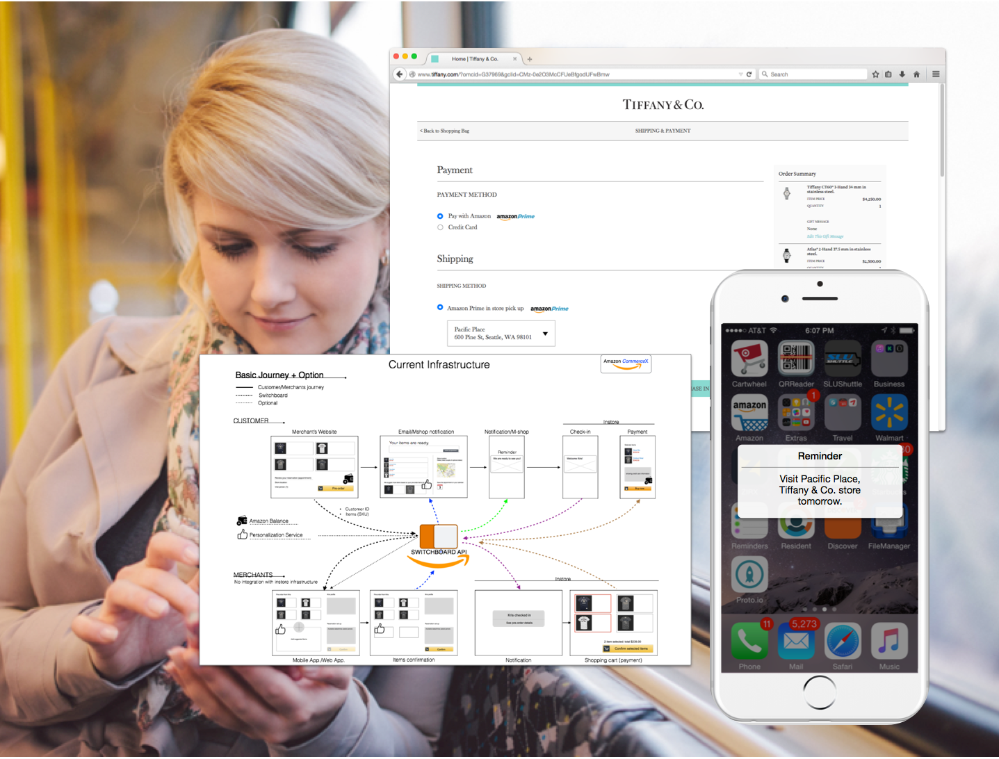
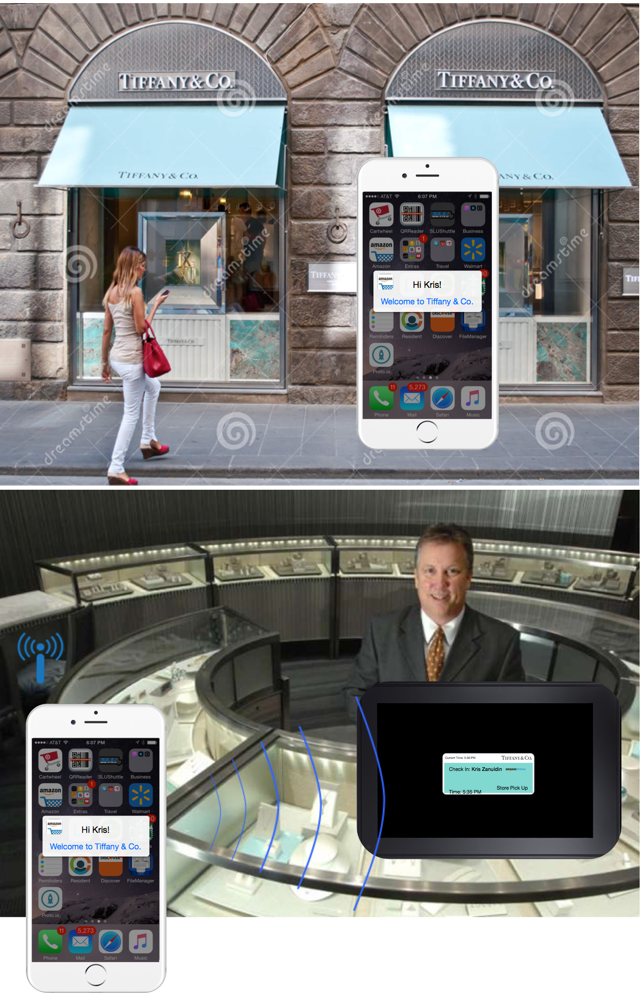
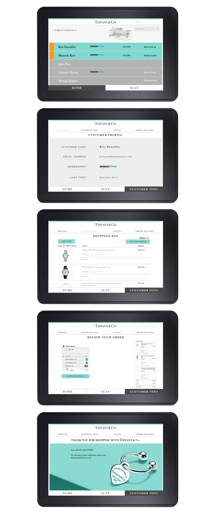

Tiffany Instore Pickup
Brainstorm, Wireframe, Mockup, Visual design, UI flow
We proposed new user experiences and associated check-in/payment technologies to Tiffany in order to effectively connect the customer’s online shopping activities with offline shopping experience, where a potential customer select items in online stores then take a closer look at the items, which are ready for shopping in offline stores after making an appointment via Tiffany.com. When the customers check in any Tiffany stores, the merchant should be able to identify them in the store through the Amazon PrimePass system and to process payments via Pay-with-Amazon.



Brainstorm, Wireframe, Mockup, Visual design, UI flow
We proposed new user experiences and associated check-in/payment technologies to Tiffany in order to effectively connect the customer’s online shopping activities with offline shopping experience, where a potential customer select items in online stores then take a closer look at the items, which are ready for shopping in offline stores after making an appointment via Tiffany.com. When the customers check in any Tiffany stores, the merchant should be able to identify them in the store through the Amazon PrimePass system and to process payments via Pay-with-Amazon.